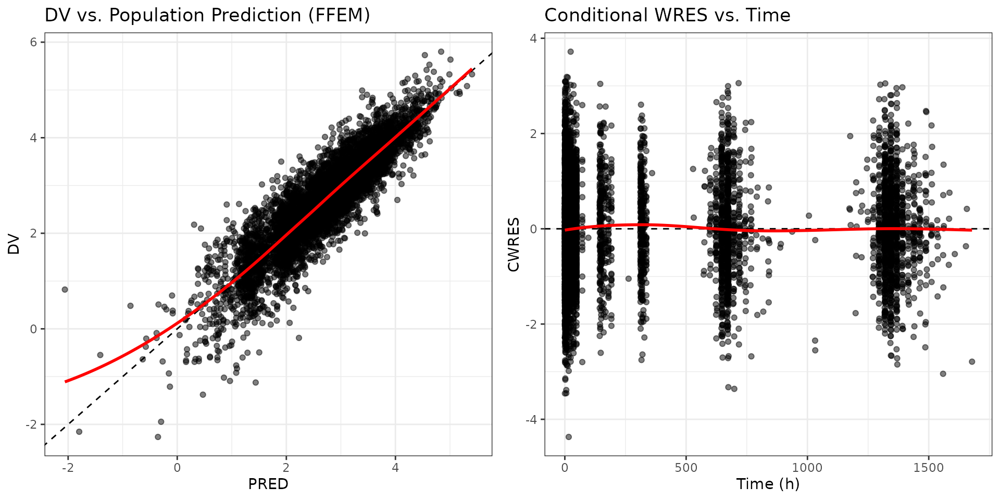
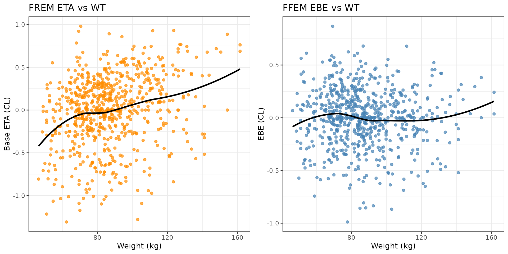
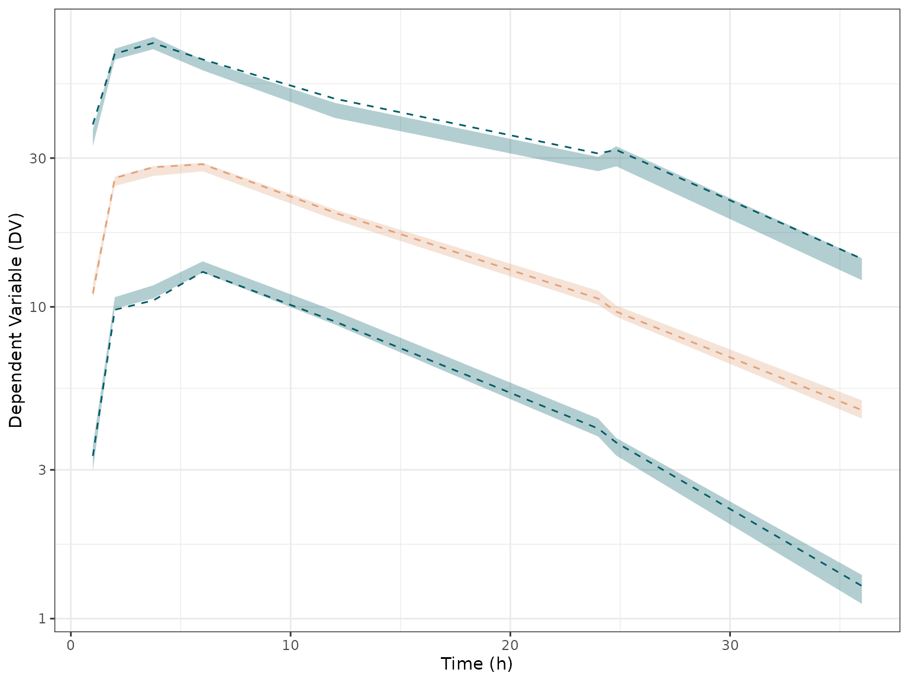

2. Walkthrough: Complete FREM Workflow
2-walkthrough-frem-workflow.RmdThis Walkthrough builds upon the fundamentals introduced in the Quickstart vignette. It is designed for pharmacometricians constructing robust, reproducible FREM workflows. Here, we move beyond the “happy path” to address real-world execution: constructing a Full Fixed Effects Model (FFEM) for evaluation, visualizing EBEs and diagnostics, plotting Visual Predictive Checks (VPCs), formatting presentation-ready tables, and safely updating models.
1. Setup and Global Options
We begin by loading the necessary packages and setting our global plotting standard to theme_bw().
library(PMXFrem)
library(ggplot2)
library(tidyverse)
library(kableExtra)
# Enforce standard ggplot theme
theme_set(theme_bw())
# Define paths to example data and converged models
modDevDir <- system.file("extdata", "SimNeb", package = "PMXFrem")
base_data <- system.file("extdata", "SimNeb/DAT-2-MI-PMX-2-onlyTYPE2-new.csv", package = "PMXFrem")
# Create a temporary directory for all generated outputs
td <- tempdir()2. The FFEM Conversion
Because a FREM model estimates covariates as dependent variables, it is mathematically incapable of directly producing standard diagnostics or VPCs. To evaluate the model, we must convert it into a deterministic Full Fixed Effects Model (FFEM).
The createFFEMmodel() function locks the covariates into the dataset as individual parameter coefficients. We execute this to create the .mod and .csv files, saving them directly to our temp directory.
ffemMod <- createFFEMmodel(
runno = 31,
baserunno = 30,
modDevDir = modDevDir,
numNonFREMThetas = 7,
numSkipOm = 2,
parNames = c("CL", "V", "MAT"),
dataFile = base_data,
newDataFile = file.path(td, "ffem_data.csv"),
ffemModName = file.path(td, "run31max0.mod")
)
#> CL:-0.006*(WT-86.863)+-0.029*(HT-169.651)+-0.018*(LBWT-57.525)+2.752*(BSA-2.012)+0.002*(AGE-43.823)+-0.005*(AST-25.552)+0.004*(ALT-28.549)+0.002*(BILI-9.819)+0.001*(CRCL-119.212)+-0.05*(BMI-30.098)+-0.168*(SEX-1.441)+0.003*(RACEL_3-0.025)+0.008*(RACEL_2-0.196)+-0.517*(NCIL_2-0.022)+-0.238*(NCIL_1-0.158)+0.737*(GENO2-1.804)+-0.053*(ETHNIC-0.458)+0.367*(SMOK-0.037)
#> V:-0.026*(WT-86.863)+-0.028*(HT-169.651)+-0.011*(LBWT-57.525)+4.008*(BSA-2.012)+-0.001*(AGE-43.823)+0*(AST-25.552)+0*(ALT-28.549)+0*(BILI-9.819)+0*(CRCL-119.212)+-0.015*(BMI-30.098)+0.153*(SEX-1.441)+0.02*(RACEL_3-0.025)+0.002*(RACEL_2-0.196)+-0.022*(NCIL_2-0.022)+0.023*(NCIL_1-0.158)+0.734*(GENO2-1.804)+-0.063*(ETHNIC-0.458)+0.25*(SMOK-0.037)
#> MAT:0.006*(WT-86.863)+-0.01*(HT-169.651)+-0.001*(LBWT-57.525)+0.202*(BSA-2.012)+0.003*(AGE-43.823)+-0.009*(AST-25.552)+0.006*(ALT-28.549)+0.002*(BILI-9.819)+0.002*(CRCL-119.212)+-0.027*(BMI-30.098)+-0.042*(SEX-1.441)+0.016*(RACEL_3-0.025)+0.039*(RACEL_2-0.196)+-0.174*(NCIL_2-0.022)+-0.106*(NCIL_1-0.158)+0.013*(GENO2-1.804)+-0.016*(ETHNIC-0.458)+0.066*(SMOK-0.037)
#>
#> $OMEGA BLOCK(3)
#> 0.06518
#> 0.019680.05207
#> 0.005230.023970.042523. Model Evaluation: GOF Diagnostics
Standard goodness-of-fit plots must be generated from the FFEM output. Here we read the standard table file generated by the FFEM to evaluate the model’s structural fit.
# Read the pre-computed FFEM table
ffem_tab <- read.table(file.path(modDevDir, "xptabmax031"), skip = 1, header = TRUE) %>%
filter(WRES != 0, BLQ != 1) # Keep only valid observation rows
# 1. PRED vs DV
p_pred <- ggplot(ffem_tab, aes(x = PRED, y = DV)) +
geom_point(alpha = 0.5) +
geom_abline(slope = 1, intercept = 0, linetype = "dashed", color = "black") +
geom_smooth(method = "loess", se = FALSE, color = "red") +
labs(title = "DV vs. Population Prediction (FFEM)", x = "PRED", y = "DV")
# 2. CWRES vs TIME
p_cwres <- ggplot(ffem_tab, aes(x = TIME, y = CWRES)) +
geom_point(alpha = 0.5) +
geom_hline(yintercept = 0, linetype = "dashed", color = "black") +
geom_smooth(method = "loess", se = FALSE, color = "red") +
labs(title = "Conditional WRES vs. Time", x = "Time (h)", y = "CWRES")
# Combine plots
gridExtra::grid.arrange(p_pred, p_cwres, ncol = 2)
4. Model Evaluation: ETAs vs EBEs
A critical conceptual difference in FREM is understanding the individual ETAs.
- In the FREM model, the raw
ETAvalues contain both the unexplained variability and the covariate variability. They will show strong trends when plotted against covariates. - In the FFEM model, the
EBEs (Empirical Bayes Estimates) represent the unexplained variability after the covariates have been applied.
Let’s read the .phi files from both models using the internal getPhi function and plot them against Weight to visualize this difference.
# Extract ETA3 (CL) from the FREM and FFEM phi files
frem_phi <- getPhi(file.path(modDevDir, "run31.phi"))
ffem_phi <- getPhi(file.path(modDevDir, "run31max0.phi"))
# Fetch WT from the base data
subj_data <- read.csv(base_data) %>% distinct(ID, .keep_all = TRUE)
# Merge
eta_df <- data.frame(
ID = subj_data$ID,
WT = subj_data$WT,
FREM_ETA = frem_phi$ETA.3.,
FFEM_EBE = ffem_phi$ETA.3.
) %>% filter(WT != -99) # Remove missing baseline covariate rows for clean plotting
# Plot FREM
p_frem <- ggplot(eta_df, aes(x = WT, y = FREM_ETA)) +
geom_point(color = "darkorange", alpha = 0.7) +
geom_smooth(method = "loess", se = FALSE, color = "black") +
labs(title = "FREM ETA vs WT", x = "Weight (kg)", y = "Base ETA (CL)")
# Plot FFEM
p_ffem <- ggplot(eta_df, aes(x = WT, y = FFEM_EBE)) +
geom_point(color = "steelblue", alpha = 0.7) +
geom_smooth(method = "loess", se = FALSE, color = "black") +
labs(title = "FFEM EBE vs WT", x = "Weight (kg)", y = "EBE (CL)")
gridExtra::grid.arrange(p_frem, p_ffem, ncol = 2)
Notice how the strong trend in the FREM ETA is completely resolved in the FFEM EBE, indicating that the FREM covariance matrix successfully captured the weight effect!5. Visual Predictive Checks (VPC)
Predictive performance must also be simulated using the FFEM model so that the simulations condition on the actual observed covariates. We use the pre-computed vpctab31 generated from the FFEM model.
## VPC configuration
n_bins <- 8
vpc_q <- c(p10 = 0.10, p50 = 0.50, p90 = 0.90)
ci_q <- c(lower = 0.05, median = 0.50, upper = 0.95)
vpc_colors <- c(p10 = "#005B65", p50 = "#E1A178", p90 = "#005B65")
calculate_bins <- . %>%
group_by(time_bin) %>%
summarise(
x_time = median(TAD),
p10 = quantile(DV, probs = vpc_q["p10"]),
p50 = quantile(DV, probs = vpc_q["p50"]),
p90 = quantile(DV, probs = vpc_q["p90"]),
.groups = "drop" # Suppress grouping messages
)
# Read the VPC data
vpctab <- read.table(file.path(modDevDir, "vpctab31"), skip = 1, header = TRUE)
## Process simulated data
vpc_sim_summary <- vpctab %>%
filter(TAD != 0) %>%
mutate(DV = exp(DV), time_bin = cut_number(TAD, n = n_bins)) %>%
group_by(REPI) %>%
nest() %>%
mutate(binned = purrr::map(data, calculate_bins)) %>%
unnest(binned) %>%
pivot_longer(
cols = starts_with("p"),
names_to = "percentile",
values_to = "value"
) %>%
# Calculate confidence intervals across replicates
group_by(time_bin, x_time, percentile) %>%
summarise(
lower = quantile(value, probs = ci_q["lower"]),
upper = quantile(value, probs = ci_q["upper"]),
.groups = "drop"
)
# Process observed data
vpc_obs_summary <- ffem_tab %>%
filter(TAD != 0) %>%
mutate(DV = exp(DV), time_bin = cut_number(TAD, n = n_bins)) %>%
calculate_bins() %>%
pivot_longer(
cols = starts_with("p"),
names_to = "percentile",
values_to = "value")
## Plotting
vpc1 <- ggplot() +
# Confidence intervals from simulated data
geom_ribbon(
data = vpc_sim_summary,
aes(x = x_time, ymin = lower, ymax = upper, fill = percentile),
show.legend = FALSE, alpha = 0.3
) +
# Lines for observed data percentiles
geom_line(
data = vpc_obs_summary,
aes(x = x_time, y = value, color = percentile),
linetype = "dashed", linewidth = 1, show.legend = FALSE
) +
# Map colors and fills manually
scale_color_manual(values = vpc_colors) +
scale_fill_manual(values = vpc_colors) +
scale_y_log10() +
labs(x = "Time (h)", y = "Dependent Variable (DV)"
)
vpc1
6. Parameter and Covariate Reporting
PMXFrem includes functions to extract presentation-ready tables. By setting uncertainty = "CI" and includeShrinkage = TRUE, the function integrates the FFEM model’s shrinkage into the main structural parameter table.
We use kableExtra to format the output.
parTableData <- fremParameterTable(
runno = 31,
modDevDir = modDevDir,
thetaNum = 2:5,
omegaNum = c(1,3,4,5),
sigmaNum = 1,
thetaLabels = c("CL (L/h)", "V (L)", "MAT (h)", "D1 (h)"),
omegaLabels = c("IIV on RUV", "IIV on CL", "IIV on V", "IIV on MAT"),
parNames = c("CL", "V", "MAT"),
sigmaLabels = c("RUV"),
includeRSE = TRUE,
uncertainty = "CI", # Generate 95% CIs
includeShrinkage = TRUE, # Include Eta Shrinkage
ffemModName = "run31max0", # Used to calculate true EBE shrinkage
numNonFREMThetas = 7,
numSkipOm = 2,
availCov = "all",
quiet = TRUE
)Structural Parameters
The estimates for the fixed effects and RUV is taken directly from the FREM model output while the IIV terms (except the IIV on RUV) are adjusted for the impact of the covariates.
parTableData$parameterTable %>%
mutate(Estimate = as.character(signif(Estimate, 3))) %>%
select(-Type) %>%
kbl(caption = "Table 1. Structural Model Parameters, Uncertainty, and EBE Shrinkage") %>%
kable_classic(full_width = FALSE, html_font = "Cambria") %>%
kable_styling(position = "center")| Parameter | Estimate | 90% CI | Shrinkage (%) |
|---|---|---|---|
| CL (L/h) | 6.15 | [5.98 - 6.29] |
|
| V (L) | 123 | [118. - 126.] |
|
| MAT (h) | 1.89 | [1.78 - 1.98] |
|
| D1 (h) | 0.67 | [0.645 - 0.696] |
|
| IIV on RUV (SD) | 0.233 | [0.202 - 0.258] | 1.0000e-10 |
| IIV on CL (SD) | 0.255 | [0.236 - 0.263] | 1.0000e-10 |
| IIV on V (SD) | 0.228 | [0.195 - 0.241] | 5.27 |
| IIV on MAT (SD) | 0.206 | [0.154 - 0.218] | 26.93 |
| RUV (SD) | 0.176 | [0.172 - 0.180] |
|
Covariate Coefficients
parTableData$coefficientTable_wide %>%
kbl(caption = "Table 2. FREM Covariate Coefficients") %>%
kable_classic(full_width = FALSE, html_font = "Cambria") %>%
kable_styling(position = "center")| Covariate | CL | CL 90% CI | V | V 90% CI | MAT | MAT 90% CI |
|---|---|---|---|---|---|---|
| WT | -0.00591 | [-0.0251 - 0.0141] | -0.0265 | [-0.0505 - -0.00587] | 0.00556 | [-0.0193 - 0.0360] |
| HT | -0.0287 | [-0.0544 - -0.000888] | -0.0279 | [-0.0568 - 0.00279] | -0.0102 | [-0.0557 - 0.0259] |
| LBWT | -0.0181 | [-0.0419 - 0.000131] | -0.0111 | [-0.0392 - 0.0157] | -0.000679 | [-0.0283 - 0.0344] |
| BSA | 2.75 | [-0.398 - 5.44] | 4.01 | [0.260 - 7.86] | 0.202 | [-4.14 - 4.59] |
| AGE | 0.00215 | [-0.000897 - 0.00632] | -0.000617 | [-0.00471 - 0.00353] | 0.00319 | [-0.000610 - 0.00828] |
| AST | -0.00466 | [-0.0105 - -0.000871] | 0.000291 | [-0.00501 - 0.00495] | -0.00894 | [-0.0173 - -0.00238] |
| ALT | 0.00427 | [0.00171 - 0.00787] | 0.000161 | [-0.00277 - 0.00352] | 0.00616 | [0.00183 - 0.0129] |
| BILI | 0.00201 | [-0.00540 - 0.0102] | 0.000162 | [-0.00764 - 0.00932] | 0.00228 | [-0.00621 - 0.0161] |
| CRCL | 0.00117 | [-0.000520 - 0.00323] | -0.000471 | [-0.00242 - 0.00129] | 0.00189 | [-0.000532 - 0.00474] |
| BMI | -0.0500 | [-0.0980 - 0.00945] | -0.0146 | [-0.0735 - 0.0526] | -0.0274 | [-0.111 - 0.0504] |
| SEX | -0.168 | [-0.357 - -0.0116] | 0.153 | [-0.0735 - 0.368] | -0.0419 | [-0.230 - 0.179] |
| RACEL_3 | 0.00281 | [-0.119 - 0.141] | 0.0197 | [-0.159 - 0.156] | 0.0160 | [-0.183 - 0.197] |
| RACEL_2 | 0.00800 | [-0.0597 - 0.0704] | 0.00167 | [-0.0698 - 0.0781] | 0.0392 | [-0.0293 - 0.116] |
| NCIL_2 | -0.517 | [-0.764 - -0.338] | -0.0215 | [-0.348 - 0.227] | -0.174 | [-0.508 - 0.0668] |
| NCIL_1 | -0.238 | [-0.331 - -0.154] | 0.0227 | [-0.0835 - 0.107] | -0.106 | [-0.242 - -0.0121] |
| GENO2 | 0.737 | [0.694 - 0.790] | 0.734 | [0.685 - 0.805] | 0.0128 | [-0.0460 - 0.0784] |
| ETHNIC | -0.0533 | [-0.104 - -0.00460] | -0.0631 | [-0.125 - -0.00972] | -0.0158 | [-0.0814 - 0.0519] |
| SMOK | 0.367 | [0.220 - 0.459] | 0.250 | [0.115 - 0.391] | 0.0664 | [-0.0777 - 0.225] |
7. Model Revision (updateFREMmodel)
If you need to iteratively add or remove covariates without restarting your entire base workflow, updateFREMmodel() handles the dataset restructuring and matrix rebuilding automatically.
The example below safely generates a new, modified dataset and control stream in our temporary directory:
# To avoid modifying the read-only package directory, we copy the base model
# and its .ext file to our temporary directory first.
file.copy(file.path(modDevDir, "run31.mod"), file.path(td, "run31.mod"))
#> [1] TRUE
file.copy(file.path(modDevDir, "run31.ext"), file.path(td, "run31.ext"))
#> [1] TRUE
newFrem <- updateFREMmodel(
strFREMModel = file.path(td, "run31.mod"),
strFREMData = file.path(modDevDir, "frem_dataset.dta"),
strFFEMData = base_data,
cstrRemoveCov = c("SEX"), # Remove the SEX covariate from the model
strID = "ID",
strNewFREMData = file.path(td, "frem_dataset_noSEX.csv"),
numNonFREMThetas = 7,
numSkipOm = 2,
bWriteData = TRUE,
bWriteMod = TRUE,
quiet = TRUE,
cstrKeepCols = c("ID", "TIME", "AMT", "EVID", "RATE", "DV", "FOOD", "FREMTYPE")
)